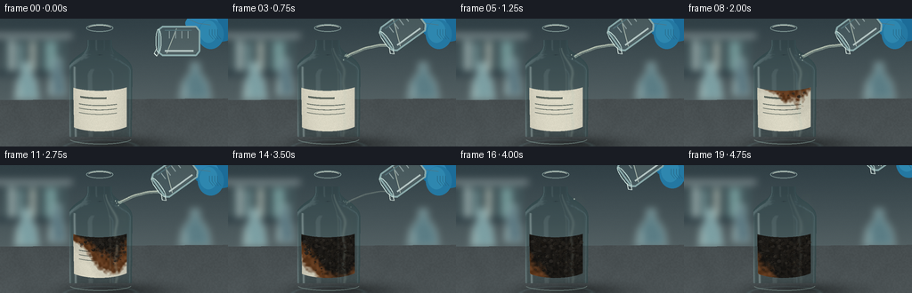
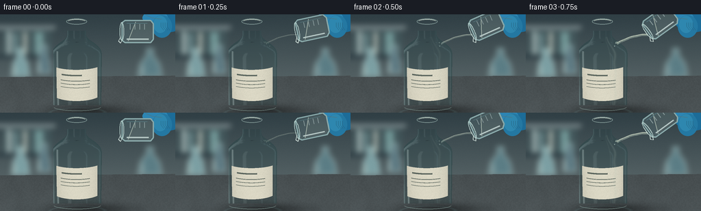
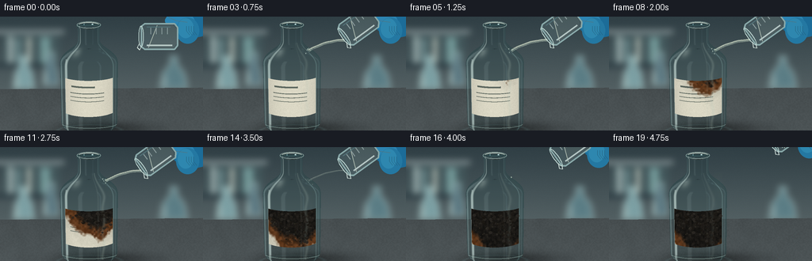
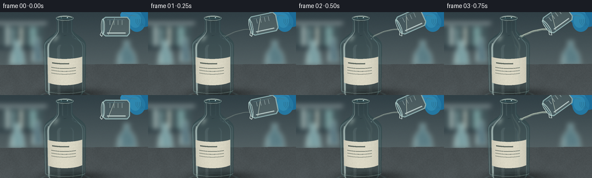

CODING AGENTS AS PIXEL WORLD MODELS
traex/GPT-6.1-Sol · material_0039
点击播放 · 原生 RGB 像素
逐轮保存的候选
回放视频、检查图与代码变化。
每份候选均可单独播放。实际图片检查记录在下方工具轨迹中。
候选 01播放与检查图
点击播放 · 原生 RGB 像素


展开代码变化
--- 上一保存版本
+++ 本次保存版本
@@ -0,0 +1,377 @@
+from pathlib import Path
+import math
+import numpy as np
+from PIL import Image, ImageDraw, ImageFilter
+import artifact_io
+
+ROOT=Path(__file__).resolve().parent
+S=3; W=256*S; H=144*S
+rng=np.random.default_rng(9047)
+# The scene is built from analytic surfaces and locally generated textures.
+cam=np.array([0.,2.35,6.2],np.float32)
+target=np.array([.18,.84,0.],np.float32)
+forward=target-cam; forward/=np.linalg.norm(forward)
+right=np.cross(forward,[0,1,0]); right/=np.linalg.norm(right)
+up=np.cross(right,forward)
+focal=3.85
+xx,yy=np.meshgrid(np.arange(W)+.5,np.arange(H)+.5)
+dirs=forward+(xx-W/2)[...,None]/H/focal*right-(yy-H/2)[...,None]/H/focal*up
+dirs=dirs/np.linalg.norm(dirs,axis=-1,keepdims=True)
+
+def proj(p):
+ p=np.asarray(p)-cam
+ dep=np.dot(p,forward)
+ return (W/2+H*focal*np.dot(p,right)/dep,H/2-H*focal*np.dot(p,up)/dep)
+
+def noise(shape,scale,seed):
+ r=np.random.default_rng(seed)
+ a=(r.random((max(2,shape[0]//scale),max(2,shape[1]//scale)))*255).astype('uint8')
+ return np.array(Image.fromarray(a).resize((shape[1],shape[0]),Image.Resampling.BICUBIC),dtype=np.float32)/255
+
+# A softly out-of-focus laboratory wall.
+bg=Image.new('RGB',(W,H))
+d=ImageDraw.Draw(bg)
+for y in range(H):
+ v=y/H
+ col=tuple(int(a*(1-v)+b*v) for a,b in zip((48,63,69),(103,115,116)))
+ d.line((0,y,W,y),fill=col)
+d.rectangle((0,17*S,81*S,21*S),fill=(140,153,155))
+d.rectangle((4*S,22*S,75*S,62*S),fill=(66,86,90))
+d.rectangle((10*S,25*S,16*S,59*S),fill=(160,178,177))
+d.rectangle((20*S,28*S,25*S,59*S),fill=(115,146,149))
+d.rectangle((34*S,26*S,39*S,59*S),fill=(173,182,173))
+d.rectangle((51*S,26*S,63*S,59*S),fill=(114,151,151))
+d.rectangle((0,59*S,76*S,64*S),fill=(43,59,66))
+# Blurred glassware on the rear bench.
+for x,y,rr,color in [(30,91,13,(123,159,163)),(64,86,9,(87,116,126)),(219,91,17,(91,125,133))]:
+ poly=[((x-rr)*S,y*S),((x-rr*.8)*S,(y-19)*S),((x-4)*S,(y-32)*S),((x-4)*S,(y-41)*S),((x+4)*S,(y-41)*S),((x+4)*S,(y-32)*S),((x+rr*.8)*S,(y-19)*S),((x+rr)*S,y*S)]
+ d.polygon(poly,fill=color)
+ d.line(poly+[poly[0]],fill=(156,181,180),width=2*S)
+ d.line(((x-rr*.6)*S,(y-16)*S,(x-rr*.65)*S,(y-2)*S),fill=(181,198,192),width=2*S)
+bg=bg.filter(ImageFilter.GaussianBlur(4.0*S))
+bgarr=np.asarray(bg,dtype=np.float32)
+
+# Stone worktop with perspective texture, shadows and a faint bottle caustic.
+tplane=-cam[1]/dirs[...,1]
+pt=cam+dirs*tplane[...,None]
+plane=(tplane>0)&(pt[...,2]>-2.2)
+grain=noise((H,W),4,22)*.6+noise((H,W),34,23)*.4
+base=72+grain*10+9*np.exp(-((pt[...,2]-1)/2)**2)
+table=np.stack([base*.91,base,base*1.025],-1)
+shadow=np.exp(-((pt[...,0]-.20)/.67)**2-((pt[...,2]-.04)/.31)**2)
+table*=1-shadow[...,None]*.45
+caustic=np.exp(-((np.sqrt((pt[...,0]/.47)**2+((pt[...,2]-.10)/.24)**2)-1)/.07)**2)
+table+=caustic[...,None]*np.array([9,15,15])
+bgarr=np.where(plane[...,None],table,bgarr)
+# Slight coherent sensor grain.
+bgarr+=rng.normal(0,.40,(H,W,1))
+bgarr=np.clip(bgarr,0,255)
+
+# Smooth lathed bottle, represented by very short analytic conical sections.
+kn_y=np.array([.025,.040,.075,.13,.98,1.035,1.09,1.17,1.25,1.295,1.33,1.51,1.53,1.55])
+kn_r=np.array([.32,.37,.405,.416,.416,.412,.389,.31,.203,.165,.155,.155,.172,.172])
+# Monotone cubic interpolation through the shape points.
+def smoothprofile(x):
+ m=np.gradient(kn_r,kn_y)
+ m[0]=1.;m[-1]=0.;m[3]=0.;m[4]=0.;m[10]=0.;m[11]=0.
+ vals=[]
+ for t in x:
+ j=np.clip(np.searchsorted(kn_y,t)-1,0,len(kn_y)-2)
+ h=kn_y[j+1]-kn_y[j];u=(t-kn_y[j])/h
+ v=(2*u**3-3*u*u+1)*kn_r[j]+(u**3-2*u*u+u)*h*m[j]+(-2*u**3+3*u*u)*kn_r[j+1]+(u**3-u*u)*h*m[j+1]
+ vals.append(v)
+ return np.array(vals)
+ys=np.unique(np.r_[kn_y,np.linspace(.025,1.55,65)])
+rs=smoothprofile(ys)
+
+# Work only within a generous screen-space crop for the glass.
+xlo,xhi=78*S,156*S; ylo,yhi=24*S,133*S
+D=dirs[ylo:yhi,xlo:xhi].reshape(-1,3).astype(np.float32)
+O=np.tile(cam,(len(D),1))
+def intersect(O,D,inner=False):
+ Y=ys.copy(); R=rs.copy()
+ if inner:
+ R=np.maximum(.001,R-.024); Y[0]=.078
+ best=np.full(len(D),np.inf,np.float32)
+ norms=np.zeros_like(D)
+ for j in range(len(Y)-1):
+ y0,y1=Y[j:j+2]
+ if y1<=y0:continue
+ k=(R[j+1]-R[j])/(y1-y0)
+ b=R[j]-k*y0
+ q=k*O[:,1]+b
+ a=D[:,0]**2+D[:,2]**2-(k*D[:,1])**2
+ bb=2*(O[:,0]*D[:,0]+O[:,2]*D[:,2]-q*k*D[:,1])
+ c=O[:,0]**2+O[:,2]**2-q*q
+ disc=bb*bb-4*a*c
+ sq=np.sqrt(np.maximum(disc,0))
+ for sign in (-1,1):
+ t=(-bb+sign*sq)/(2*a+1e-20)
+ y=O[:,1]+t*D[:,1]
+ valid=(disc>=0)&(t>1e-4)&(t<best)&(y>=y0)&(y<=y1)
+ if not np.any(valid):continue
+ hit=O[valid]+t[valid,None]*D[valid]
+ nr=np.sqrt(hit[:,0]**2+hit[:,2]**2)
+ n=np.stack([hit[:,0]/nr,np.full(len(hit),-k),hit[:,2]/nr],-1)
+ n/=np.linalg.norm(n,axis=-1,keepdims=True)
+ best[valid]=t[valid]; norms[valid]=n
+ # Flat, thick glass base. The neck has an open mouth.
+ ybase=.078 if inner else .025
+ t=(ybase-O[:,1])/D[:,1]
+ hp=O+D*t[:,None]
+ valid=(t>1e-4)&(t<best)&(hp[:,0]**2+hp[:,2]**2<(.30 if inner else .32)**2)
+ best[valid]=t[valid]; norms[valid]=[0,-1,0]
+ if not inner:
+ t=(1.55-O[:,1])/D[:,1]
+ hp=O+D*t[:,None];r2=hp[:,0]**2+hp[:,2]**2
+ valid=(t>1e-4)&(t<best)&(r2<.172**2)&(r2>.148**2)
+ best[valid]=t[valid];norms[valid]=[0,1,0]
+ return best,norms
+
+T,N=intersect(O,D)
+mask=np.isfinite(T)
+P=O+D*np.where(mask,T,0)[:,None]
+
+def refract(D,N,eta):
+ c=-np.sum(D*N,axis=-1)
+ k=1-eta*eta*(1-c*c)
+ V=eta*D+(eta*c-np.sqrt(np.maximum(k,0)))[:,None]*N
+ V/=np.maximum(1e-8,np.linalg.norm(V,axis=-1,keepdims=True))
+ return V
+
+def env(O,V):
+ # Trace an outgoing ray onto either the stone worktop or back wall.
+ t=-O[:,1]/np.where(np.abs(V[:,1])<1e-6,1e-6,V[:,1])
+ Q=O+t[:,None]*V
+ planehit=(t>0)&(Q[:,2]>-2.2)
+ tw=(-2.2-O[:,2])/np.where(np.abs(V[:,2])<1e-6,1e-6,V[:,2])
+ qw=O+tw[:,None]*V
+ hit=np.where(planehit[:,None],Q,qw)
+ delta=hit-cam
+ depth=delta@forward
+ u=W/2+H*focal*(delta@right)/np.maximum(depth,.01)
+ v=H/2-H*focal*(delta@up)/np.maximum(depth,.01)
+ u=np.clip(u,0,W-1).astype(int);v=np.clip(v,0,H-1).astype(int)
+ return bgarr[v,u]
+
+def reflected(V,N):
+ V=V-2*np.sum(V*N,axis=-1)[:,None]*N
+ # Large, soft photographic light panels reflected in the glass.
+ z=np.maximum(.1,np.abs(V[:,2]))
+ a=V[:,0]/z;b=V[:,1]/z
+ light1=np.exp(-((a+.75)/.24)**8-((b-.45)/1.5)**8)
+ light2=np.exp(-((a-1.05)/.13)**8-((b-.18)/1.7)**8)
+ ceiling=np.exp(-((V[:,1]-.85)/.25)**2)
+ val=np.stack([38+9*ceiling,52+12*ceiling,56+14*ceiling],-1)
+ val+=light1[:,None]*np.array([169,177,174])+light2[:,None]*np.array([113,139,147])
+ return np.minimum(val,250)
+
+# Refraction at the air/glass and glass/air boundaries.
+V1=refract(D,N,1/1.47)
+T2,N2=intersect(P+V1*.0003,V1,True)
+valid2=mask&np.isfinite(T2)
+P2=P+V1*np.where(valid2,T2,0)[:,None]
+V2=refract(V1,-N2,1.47)
+T3,N3=intersect(P2+V2*.0006,V2,True)
+valid3=valid2&np.isfinite(T3)
+P3=P2+V2*np.where(valid3,T3,0)[:,None]
+V3=refract(V2,-N3,1/1.47)
+T4,N4=intersect(P3+V3*.0006,V3,False)
+valid4=valid3&np.isfinite(T4)
+P4=P3+V3*np.where(valid4,T4,0)[:,None]
+V4=refract(V3,N4,1.47)
+trans=env(np.where(valid4[:,None],P4,P),np.where(valid4[:,None],V4,D))
+cos=np.clip(-np.sum(D*N,axis=-1),0,1)
+fres=.038+.962*(1-cos)**5
+ref=reflected(D,N)
+shade=trans*np.array([.90,.965,.958])*(1-fres[:,None])+ref*fres[:,None]
+# Back-wall reflected highlight, and a faint blue-green edge from thick glass.
+backref=reflected(V2,-N3)
+shade=shade*.96+backref*.04
+edge=(1-cos)**3
+shade+=edge[:,None]*np.array([5,15,14])
+# A very narrow secondary highlight characteristic of cylindrical glass.
+xworld=P[:,0]
+highlight=np.exp(-((xworld+.313)/.014)**2)*(P[:,1]>.16)*(P[:,1]<1.10)
+shade=shade*(1-highlight[:,None]*.38)+np.array([199,219,216])*highlight[:,None]*.38
+static=bgarr.copy()
+roi=static[ylo:yhi,xlo:xhi].reshape(-1,3).copy();roi[mask]=shade[mask]
+static[ylo:yhi,xlo:xhi]=roi.reshape(yhi-ylo,xhi-xlo,3)
+
+# Paper label wrapped around the front of the bottle. Char follows wetting
+# of its cellulose; the glass itself does not dissolve in sulfuric acid.
+theta=np.arctan2(P[:,0],P[:,2]);py=P[:,1]
+label=mask&(np.abs(theta)<.93)&(py>.32)&(py<.84)&(P[:,2]>0)
+U=(theta+.93)/1.86;V=(.84-py)/.52
+ntex=noise((yhi-ylo,xhi-xlo),7,121).reshape(-1)
+macro=noise((yhi-ylo,xhi-xlo),35,123).reshape(-1)
+fine=noise((yhi-ylo,xhi-xlo),2,127).reshape(-1)
+# The curved paper carries small, unobtrusive printed rules.
+labelshade=.81+.19*np.maximum(0,N[:,2])
+paper=np.stack([214+fine*12,211+fine*11,192+fine*11],-1)*labelshade[:,None]
+rule=(U>.13)&(U<.78)&(((V>.35)&(V<.37))|((V>.46)&(V<.476))|((V>.57)&(V<.585)))
+rule|=(U>.16)&(U<.60)&(V>.16)&(V<.205)
+paper[rule]=np.array([95,105,97])*labelshade[rule,None]
+# A diffuse sheet noise for vapor moving upward, generated once.
+steamtex=noise((H,W),18,208)
+base_noise=noise((H,W),2,603)
+
+# Drawing utility uses supersampled image coordinates.
+def layer():return Image.new('RGBA',(W,H),(0,0,0,0))
+def line(draw,pts,fill,width):draw.line([(x*S,y*S) for x,y in pts],fill=fill,width=max(1,int(width*S)),joint='curve')
+def ellipse(draw,box,fill,outline=None,width=1):draw.ellipse(tuple(v*S for v in box),fill=fill,outline=outline,width=max(1,int(width*S)))
+
+def pouring_vessel(frame):
+ lay=layer();dr=ImageDraw.Draw(lay)
+ # The container tilts in, is held steadily, then lifts away.
+ tilt=min(1,frame/3)
+ lift=max(0,(frame-14)/5)
+ mouth=np.array([178+lift*28,25-lift*30])
+ angle=math.radians(-90-36*tilt)
+ ca,sa=math.cos(angle),math.sin(angle)
+ def tr(p):
+ x,y=p;return ((mouth[0]+ca*x-sa*y)*S,(mouth[1]+sa*x+ca*y)*S)
+ # A blue protective glove, cropped by the frame's upper right boundary.
+ ox=lift*16;oy=-lift*20
+ ellipse(dr,(215+ox,-17+oy,274+ox,26+oy),(28,108,152,255))
+ ellipse(dr,(208+ox,-5+oy,245+ox,15+oy),(45,133,179,255))
+ ellipse(dr,(222+ox,1+oy,251+ox,34+oy),(36,120,162,255))
+ ellipse(dr,(224+ox,2+oy,244+ox,27+oy),(46,135,175,255))
+ for k in range(4):
+ line(dr,[(235+ox+k*3,12+oy),(235+ox+k*3,18+oy),(239+ox+k*3,23+oy)],(20,87,122,160),.5)
+ line(dr,[(213+ox,1+oy),(222+ox,5+oy),(236+ox,7+oy)],(97,167,193,135),1)
+ # Transparent small laboratory pouring beaker.
+ outline=[(-13,0),(-16,4),(-16,42),(-11,46),(11,46),(16,42),(16,4),(13,0)]
+ dr.polygon([tr(p) for p in outline],fill=(154,194,197,38))
+ dr.line([tr(p) for p in outline+[outline[0]]],fill=(178,218,216,170),width=2*S)
+ # Remaining clear liquid with its horizontal meniscus in world coordinates.
+ fluid=[(-14,9),(-14,40),(-9,44),(10,44),(14,40),(14,20)]
+ dr.polygon([tr(p) for p in fluid],fill=(188,216,207,43))
+ dr.line([tr((-14,9)),tr((14,20))],fill=(225,239,220,165),width=S)
+ dr.line([tr((-11,7)),tr((-11,39))],fill=(232,250,245,180),width=2*S)
+ dr.line([tr((12,7)),tr((12,37))],fill=(118,170,177,120),width=S)
+ for j in range(4):
+ dr.line([tr((3,12+j*7)),tr((11,12+j*7))],fill=(205,225,222,140),width=S)
+ lip=[tr((13*math.cos(a),3*math.sin(a))) for a in np.linspace(0,2*math.pi,70)]
+ dr.line(lip,fill=(207,234,228,210),width=S)
+ # Pouring lip, upper edge catches the softbox.
+ dr.line([tr((-13,0)),tr((-17,-2)),tr((-14,-5)),tr((-8,-2))],fill=(231,246,239,220),width=S)
+ return lay
+
+frames=[]
+for f in range(20):
+ t=f/19
+ arr=static.copy()
+ local=arr[ylo:yhi,xlo:xhi].reshape(-1,3).copy()
+ # A viscous acid run reaches the right shoulder, then wets the label.
+ reaction=np.clip((f-3)/13,0,1)
+ # Arrival field: several irregular rivulets, moving downward and sideways.
+ arrival=.18+V*.48+np.abs(U-.71)*.47+(macro-.5)*.13+(ntex-.5)*.052
+ front=reaction-arrival
+ burned=np.clip(front*14+.3,0,1)
+ wet=np.clip((reaction+.15-arrival)*12,0,1)
+ brown=np.stack([83+ntex*32,47+ntex*24,21+ntex*19],-1)
+ char=np.stack([17+ntex*15+fine*5,17+ntex*13+fine*3,15+ntex*11+fine*3],-1)
+ carbon=np.clip((front-.13)*8,0,1)
+ stained=brown*(1-carbon[:,None])+char*carbon[:,None]
+ pc=paper*(1-burned[:,None])+stained*burned[:,None]
+ pc*=1-wet[:,None]*.05
+ # Carbon fissures and tiny glints on the wetted, irregular paper.
+ cracks=(np.sin(U*109+macro*13)+np.sin(V*137+ntex*5)>1.56)&(carbon>.45)
+ pc[cracks]*=.55
+ gleam=(np.exp(-((ntex-.58)/.018)**2)*carbon*.08)[:,None]
+ pc+=gleam*np.array([110,106,89])
+ local[label]=pc[label]
+ # Acid glazes flowing across shoulder and down the exposed glass.
+ flow=np.clip((f-1)/3,0,1)*(1-np.clip((f-13)/5,0,1)*.55)
+ run=(np.exp(-((theta-.49-.033*np.sin(py*18+t*3))/.055)**2)+.5*np.exp(-((theta-.30)/.023)**2))
+ run*=mask&(py>.12)&(py<1.32)&(P[:,2]>0)
+ ra=np.clip(run*flow*.20,0,.35)
+ local=local*(1-ra[:,None])+np.array([183,201,187])*ra[:,None]
+ arr[ylo:yhi,xlo:xhi]=local.reshape(yhi-ylo,xhi-xlo,3)
+ image=Image.fromarray(np.uint8(np.clip(arr,0,255))).convert('RGBA')
+ # Glass mouth and substantial base rings in perspective.
+ gl=layer();gd=ImageDraw.Draw(gl)
+ cx,cy=proj([0,1.55,0]);rx=15.2*S;ry=4.2*S
+ gd.ellipse((cx-rx,cy-ry,cx+rx,cy+ry),outline=(177,205,197,145),width=S)
+ gd.arc((cx-rx+2*S,cy-ry+S,cx+rx-2*S,cy+ry-S),195,344,fill=(229,241,225,184),width=S)
+ bx,by=proj([0,.07,0]);br=35*S;bh=6.2*S
+ gd.arc((bx-br,by-bh,bx+br,by+bh),9,166,fill=(162,193,184,110),width=S)
+ image=Image.alpha_composite(image,gl)
+ # Enlarged blistered cellulose and damp, porous carbon across the label.
+ lump=layer();ld=ImageDraw.Draw(lump)
+ rr=np.random.default_rng(177)
+ for j in range(115):
+ u=rr.uniform(.08,.94);v=rr.uniform(.06,.90)
+ th=-.93+1.86*u;y=.84-.52*v
+ a=.18+v*.48+abs(u-.71)*.47+rr.uniform(-.06,.06)
+ grow=np.clip((reaction-a-.025)*6,0,1)
+ if grow<=0:continue
+ rad=rr.uniform(.5,2.3)*grow
+ p=[(.418+rad*.004)*math.sin(th),y,(.418+rad*.004)*math.cos(th)]
+ sx,sy=proj(p);sx/=S;sy/=S
+ shade0=int(rr.uniform(19,39))
+ ellipse(ld,(sx-rad,sy-rad*.85,sx+rad,sy+rad*.85),(shade0+4,shade0+1,shade0-3,int(230*grow)))
+ ld.arc(((sx-rad*.70)*S,(sy-rad*.65)*S,(sx+rad*.5)*S,(sy+rad*.4)*S),197,291,fill=(88,83,64,int(95*grow)),width=max(1,int(S*.35)))
+ if j%7==0:
+ ellipse(ld,(sx-rad*.50,sy-rad*.38,sx-rad*.20,sy-rad*.12),(143,131,98,int(90*grow)))
+ image=Image.alpha_composite(image,lump)
+ # Transparent stream: gravitational arc from the tilted beaker to the
+ # outside of the bottle's shoulder, not a jet entering its mouth.
+ if 1<=f<=14:
+ stream=layer();sd=ImageDraw.Draw(stream)
+ strength=min(1,f/3)*min(1,(15-f)/3)
+ end=np.array(proj([.23,1.22,.22]))/S
+ start=np.array([178.,30.])
+ points=[]
+ for q in np.linspace(0,1,85):
+ x=start[0]+(end[0]-start[0])*q
+ y=start[1]+(end[1]-start[1])*q*q+.15*math.sin(q*17+f*.6)
+ points.append((x,y))
+ line(sd,points,(201,215,194,int(125*strength)),3.2*strength+.3)
+ line(sd,[(x-.65,y-.5) for x,y in points],(236,244,220,int(205*strength)),.68)
+ line(sd,[(x+.72,y+.35) for x,y in points],(83,115,118,int(125*strength)),.6)
+ # Small clear impact droplets remain close to the glass.
+ for j in range(6):
+ phase=(f*.31+j*.153)%1
+ x=end[0]+(j-2.5)*1.4+math.sin(j*2)*phase*3
+ y=end[1]-5*math.sin(phase*math.pi)+phase*5
+ ellipse(sd,(x-.45,y-.7,x+.45,y+.7),(206,227,211,int(140*strength)))
+ image=Image.alpha_composite(image,stream)
+ if f>=15 and f<=16:
+ drp=layer();dd=ImageDraw.Draw(drp)
+ q=(f-14)/3;ex,ey=np.array(proj([.23,1.22,.22]))/S
+ ellipse(dd,(ex-1,ey-20+q*21,ex+.4,ey-18+q*21),(218,237,213,145))
+ image=Image.alpha_composite(image,drp)
+ image=Image.alpha_composite(image,pouring_vessel(f))
+ # Wisps of hot water vapor above the reacting paper, with drifting
+ # semi-transparent eddies rather than an opaque smoke cloud.
+ if f>=5:
+ density=min(1,(f-4)/6)*(.75+.25*math.sin(f*.35))
+ sx,sy=np.array(proj([.20,.82,.42]))
+ X=(xx-sx)/S;Y=(sy-yy)/S
+ alpha=np.zeros((H,W),np.float32)
+ for j in range(6):
+ age=((f-5)*.13+j*.168)%1
+ rise=age*50
+ dx=3*math.sin(age*6+j)+age*11
+ sigma=2.0+age*5
+ puff=np.exp(-((X-dx)/sigma)**2-((Y-rise)/(sigma*1.8))**2)
+ alpha+=puff*(1-age)*12*density
+ alpha*=np.clip((Y+2)/6,0,1)
+ alpha*=.45+np.roll(steamtex,int(f*S*1.6),axis=0)
+ rgba=np.zeros((H,W,4),np.uint8);rgba[:,:,:3]=[202,211,203];rgba[:,:,3]=np.uint8(np.clip(alpha,0,30))
+ image=Image.alpha_composite(image,Image.fromarray(rgba))
+ # Very slight liquid gathering at the base, reflecting the overhead light.
+ if f>7:
+ pudd=layer();pd=ImageDraw.Draw(pudd)
+ bx,by=np.array(proj([.10,0,.05]))/S
+ grow=(f-7)/12
+ ellipse(pd,(bx-25-grow*8,by-1,bx+28+grow*6,by+5),(124,148,139,int(18*grow)))
+ pd.arc(((bx-23-grow*8)*S,(by-1)*S,(bx+30+grow*7)*S,(by+6)*S),13,143,fill=(160,177,155,int(80*grow)),width=S)
+ image=Image.alpha_composite(image,pudd)
+ image=image.convert('RGB').resize((256,144),Image.Resampling.LANCZOS)
+ frames.append(np.asarray(image))
+artifact_io.save(np.stack(frames).astype(np.uint8),ROOT)
+print('Saved 20 RGB frames to',ROOT)
+print('Bottle mouth:',np.array(proj([0,1.55,0]))/S,'base:',np.array(proj([0,.07,0]))/S)
候选 02播放与检查图
点击播放 · 原生 RGB 像素


展开代码变化
--- 上一保存版本 +++ 本次保存版本 @@ -85,7 +85,7 @@ rs=smoothprofile(ys) # Work only within a generous screen-space crop for the glass. -xlo,xhi=78*S,156*S; ylo,yhi=24*S,133*S +xlo,xhi=73*S,156*S; ylo,yhi=5*S,144*S D=dirs[ylo:yhi,xlo:xhi].reshape(-1,3).astype(np.float32) O=np.tile(cam,(len(D),1)) def intersect(O,D,inner=False): @@ -194,6 +194,16 @@ xworld=P[:,0] highlight=np.exp(-((xworld+.313)/.014)**2)*(P[:,1]>.16)*(P[:,1]<1.10) shade=shade*(1-highlight[:,None]*.38)+np.array([199,219,216])*highlight[:,None]*.38 +# Smooth studio-strip highlights run over the neck and shoulder curvature. +ang=np.arctan2(P[:,0],P[:,2]) +strip=np.exp(-((ang+.88)/.071)**4)*mask*(P[:,2]>0) +strip*=.30+.27*np.exp(-((P[:,1]-.64)/.67)**4) +shade=shade*(1-strip[:,None])+np.array([201,222,216])*strip[:,None] +strip2=np.exp(-((ang-.95)/.028)**2)*mask*(P[:,2]>0)*.31 +shade=shade*(1-strip2[:,None])+np.array([153,194,190])*strip2[:,None] +# Small broad reflected pool at the shoulder and substantial lower heel. +shoulder=np.exp(-((P[:,1]-1.19)/.052)**2)*np.exp(-((ang+.63)/.21)**2)*.26 +shade=shade*(1-shoulder[:,None])+np.array([204,220,209])*shoulder[:,None] static=bgarr.copy() roi=static[ylo:yhi,xlo:xhi].reshape(-1,3).copy();roi[mask]=shade[mask] static[ylo:yhi,xlo:xhi]=roi.reshape(yhi-ylo,xhi-xlo,3)
可观测工具轨迹
实际执行的命令与返回图片。
命令 1exit 0
/bin/bash -lc 'ls -la && cat prompt.txt && cat GENERATION_RULES.md && cat task_spec.json'
命令 2exit 0
/bin/bash -lc "cat artifact_io.py && python - <<'PY'
import numpy,PIL
print('numpy and pillow ready')
PY"命令 3exit 0
/bin/bash -lc "cat > generate.py <<'PY'
from pathlib import Path
import math
import numpy as np
from PIL import Image, ImageDraw, ImageFilter
import artifact_io
ROOT=Path(__file__).resolve().parent
S=3; W=256*S; H=144*S
rng=np.random.default_rng(9047)
# The scene is built from analytic surfaces and locally generated textures.
cam=np.array([0.,2.35,6.2],np.float32)
target=np.array([.18,.84,0.],np.float32)
forward=target-cam; forward/=np.linalg.norm(forward)
right=np.cross(forward,[0,1,0]); right/=np.linalg.norm(right)
up=np.cross(right,forward)
focal=3.85
xx,yy=np.meshgrid(np.arange(W)+.5,np.arange(H)+.5)
dirs=forward+(xx-W/2)[...,None]/H/focal*right-(yy-H/2)[...,None]/H/focal*up
dirs=dirs/np.linalg.norm(dirs,axis=-1,keepdims=True)
def proj(p):
p=np.asarray(p)-cam
dep=np.dot(p,forward)
return (W/2+H*focal*np.dot(p,right)/dep,H/2-H*focal*np.dot(p,up)/dep)
def noise(shape,scale,seed):
r=np.random.default_rng(seed)
a=(r.random((max(2,shape[0]//scale),max(2,shape[1]//scale)))*255).astype('uint8')
return np.array(Image.fromarray(a).resize((shape[1],shape[0]),Image.Resampling.BICUBIC),dtype=np.float32)/255
# A softly out-of-focus laboratory wall.
bg=Image.new('RGB',(W,H))
d=ImageDraw.Draw(bg)
for y in range(H):
v=y/H
col=tuple(int(a*(1-v)+b*v) for a,b in zip((48,63,69),(103,115,116)))
d.line((0,y,W,y),fill=col)
d.rectangle((0,17*S,81*S,21*S),fill=(140,153,155))
d.rectangle((4*S,22*S,75*S,62*S),fill=(66,86,90))
d.rectangle((10*S,25*S,16*S,59*S),fill=(160,178,177))
d.rectangle((20*S,28*S,25*S,59*S),fill=(115,146,149))
d.rectangle((34*S,26*S,39*S,59*S),fill=(173,182,173))
d.rectangle((51*S,26*S,63*S,59*S),fill=(114,151,151))
d.rectangle((0,59*S,76*S,64*S),fill=(43,59,66))
# Blurred glassware on the rear bench.
for x,y,rr,color in [(30,91,13,(123,159,163)),(64,86,9,(87,116,126)),(219,91,17,(91,125,133))]:
poly=[((x-rr)*S,y*S),((x-rr*.8)*S,(y-19)*S),((x-4)*S,(y-32)*S),((x-4)*S,(y-41)*S),((x+4)*S,(y-41)*S),((x+4)*S,(y-32)*S),((x+rr*.8)*S,(y-19)*S),((x+rr)*S,y*S)]
d.polygon(poly,fill=color)
d.line(poly+[poly[0]],fill=(156,181,180),width=2*S)
d.line(((x-rr*.6)*S,(y-16)*S,(x-rr*.65)*S,(y-2)*S),fill=(181,198,192),width=2*S)
bg=bg.filter(ImageFilter.GaussianBlur(4.0*S))
bgarr=np.asarray(bg,dtype=np.float32)
# Stone worktop with perspective texture, shadows and a faint bottle caustic.
tplane=-cam[1]/dirs[...,1]
pt=cam+dirs*tplane[...,None]
plane=(tplane>0)&(pt[...,2]>-2.2)
grain=noise((H,W),4,22)*.6+noise((H,W),34,23)*.4
base=72+grain*10+9*np.exp(-((pt[...,2]-1)/2)**2)
table=np.stack([base*.91,base,base*1.025],-1)
shadow=np.exp(-((pt[...,0]-.20)/.67)**2-((pt[...,2]-.04)/.31)**2)
table*=1-shadow[...,None]*.45
caustic=np.exp(-((np.sqrt((pt[...,0]/.47)**2+((pt[...,2]-.10)/.24)**2)-1)/.07)**2)
table+=caustic[...,None]*np.array([9,15,15])
bgarr=np.where(plane[...,None],table,bgarr)
# Slight coherent sensor grain.
bgarr+=rng.normal(0,.40,(H,W,1))
bgarr=np.clip(bgarr,0,255)
# Smooth lathed bottle, represented by very short analytic conical sections.
kn_y=np.array([.025,.040,.075,.13,.98,1.035,1.09,1.17,1.25,1.295,1.33,1.51,1.53,1.55])
kn_r=np.array([.32,.37,.405,.416,.416,.412,.389,.31,.203,.165,.155,.155,.172,.172])
# Monotone cubic interpolation through the shape points.
def smoothprofile(x):
m=np.gradient(kn_r,kn_y)
m[0]=1.;m[-1]=0.;m[3]=0.;m[4]=0.;m[10]=0.;m[11]=0.
vals=[]
for t in x:
j=np.clip(np.searchsorted(kn_y,t)-1,0,len(kn_y)-2)
h=kn_y[j+1]-kn_y[j];u=(t-kn_y[j])/h
v=(2*u**3-3*u*u+1)*kn_r[j]+(u**3-2*u*u+u)*h*m[j]+(-2*u**3+3*u*u)*kn_r[j+1]+(u**3-u*u)*h*m[j+1]
vals.append(v)
return np.array(vals)
ys=np.unique(np.r_[kn_y,np.linspace(.025,1.55,65)])
rs=smoothprofile(ys)
# Work only within a generous screen-space crop for the glass.
xlo,xhi=78*S,156*S; ylo,yhi=24*S,133*S
D=dirs[ylo:yhi,xlo:xhi].reshape(-1,3).astype(np.float32)
O=np.tile(cam,(len(D),1))
def intersect(O,D,inner=False):
Y=ys.copy(); R=rs.copy()
if inner:
R=np.maximum(.001,R-.024); Y[0]=.078
best=np.full(len(D),np.inf,np.float32)
norms=np.zeros_like(D)
for j in range(len(Y)-1):
y0,y1=Y[j:j+2]
if y1<=y0:continue
k=(R[j+1]-R[j])/(y1-y0)
b=R[j]-k*y0
q=k*O[:,1]+b
a=D[:,0]**2+D[:,2]**2-(k*D[:,1])**2
bb=2*(O[:,0]*D[:,0]+O[:,2]*D[:,2]-q*k*D[:,1])
c=O[:,0]**2+O[:,2]**2-q*q
disc=bb*bb-4*a*c
sq=np.sqrt(np.maximum(disc,0))
for sign in (-1,1):
t=(-bb+sign*sq)/(2*a+1e-20)
y=O[:,1]+t*D[:,1]
valid=(disc>=0)&(t>1e-4)&(t<best)&(y>=y0)&(y<=y1)
if not np.any(valid):continue
hit=O[valid]+t[valid,None]*D[valid]
nr=np.sqrt(hit[:,0]**2+hit[:,2]**2)
n=np.stack([hit[:,0]/nr,np.full(len(hit),-k),hit[:,2]/nr],-1)
n/=np.linalg.norm(n,axis=-1,keepdims=True)
best[valid]=t[valid]; norms[valid]=n
# Flat, thick glass base. The neck has an open mouth.
ybase=.078 if inner else .025
t=(ybase-O[:,1])/D[:,1]
hp=O+D*t[:,None]
valid=(t>1e-4)&(t<best)&(hp[:,0]**2+hp[:,2]**2<(.30 if inner else .32)**2)
best[valid]=t[valid]; norms[valid]=[0,-1,0]
if not inner:
t=(1.55-O[:,1])/D[:,1]
hp=O+D*t[:,None];r2=hp[:,0]**2+hp[:,2]**2
valid=(t>1e-4)&(t<best)&(r2<.172**2)&(r2>.148**2)
best[valid]=t[valid];norms[valid]=[0,1,0]
return best,norms
T,N=intersect(O,D)
mask=np.isfinite(T)
P=O+D*np.where(mask,T,0)[:,None]
def refract(D,N,eta):
c=-np.sum(D*N,axis=-1)
k=1-eta*eta*(1-c*c)
V=eta*D+(eta*c-np.sqrt(np.maximum(k,0)))[:,None]*N
V/=np.maximum(1e-8,np.linalg.norm(V,axis=-1,keepdims=True))
return V
def env(O,V):
# Trace an outgoing ray onto either the stone worktop or back wall.
t=-O[:,1]/np.where(np.abs(V[:,1])<1e-6,1e-6,V[:,1])
Q=O+t[:,None]*V
planehit=(t>0)&(Q[:,2]>-2.2)
tw=(-2.2-O[:,2])/np.where(np.abs(V[:,2])<1e-6,1e-6,V[:,2])
qw=O+tw[:,None]*V
hit=np.where(planehit[:,None],Q,qw)
delta=hit-cam
depth=delta@forward
u=W/2+H*focal*(delta@right)/np.maximum(depth,.01)
v=H/2-H*focal*(delta@up)/np.maximum(depth,.01)
u=np.clip(u,0,W-1).astype(int);v=np.clip(v,0,H-1).astype(int)
return bgarr[v,u]
def reflected(V,N):
V=V-2*np.sum(V*N,axis=-1)[:,None]*N
# Large, soft photographic light panels reflected in the glass.
z=np.maximum(.1,np.abs(V[:,2]))
a=V[:,0]/z;b=V[:,1]/z
light1=np.exp(-((a+.75)/.24)**8-((b-.45)/1.5)**8)
light2=np.exp(-((a-1.05)/.13)**8-((b-.18)/1.7)**8)
ceiling=np.exp(-((V[:,1]-.85)/.25)**2)
val=np.stack([38+9*ceiling,52+12*ceiling,56+14*ceiling],-1)
val+=light1[:,None]*np.array([169,177,174])+light2[:,None]*np.array([113,139,147])
return np.minimum(val,250)
# Refraction at the air/glass and glass/air boundaries.
V1=refract(D,N,1/1.47)
T2,N2=intersect(P+V1*.0003,V1,True)
valid2=mask&np.isfinite(T2)
P2=P+V1*np.where(valid2,T2,0)[:,None]
V2=refract(V1,-N2,1.47)
T3,N3=intersect(P2+V2*.0006,V2,True)
valid3=valid2&np.isfinite(T3)
P3=P2+V2*np.where(valid3,T3,0)[:,None]
V3=refract(V2,-N3,1/1.47)
T4,N4=intersect(P3+V3*.0006,V3,False)
valid4=valid3&np.isfinite(T4)
P4=P3+V3*np.where(valid4,T4,0)[:,None]
V4=refract(V3,N4,1.47)
trans=env(np.where(valid4[:,None],P4,P),np.where(valid4[:,None],V4,D))
cos=np.clip(-np.sum(D*N,axis=-1),0,1)
fres=.038+.962*(1-cos)**5
ref=reflected(D,N)
shade=trans*np.array([.90,.965,.958])*(1-fres[:,None])+ref*fres[:,None]
# Back-wall reflected highlight, and a faint blue-green edge from thick glass.
backref=reflected(V2,-N3)
shade=shade*.96+backref*.04
edge=(1-cos)**3
shade+=edge[:,None]*np.array([5,15,14])
# A very narrow secondary highlight characteristic of cylindrical glass.
xworld=P[:,0]
highlight=np.exp(-((xworld+.313)/.014)**2)*(P[:,1]>.16)*(P[:,1]<1.10)
shade=shade*(1-highlight[:,None]*.38)+np.array([199,219,216])*highlight[:,None]*.38
static=bgarr.copy()
roi=static[ylo:yhi,xlo:xhi].reshape(-1,3).copy();roi[mask]=shade[mask]
static[ylo:yhi,xlo:xhi]=roi.reshape(yhi-ylo,xhi-xlo,3)
# Paper label wrapped around the front of the bottle. Char follows wetting
# of its cellulose; the glass itself does not dissolve in sulfuric acid.
theta=np.arctan2(P[:,0],P[:,2]);py=P[:,1]
label=mask&(np.abs(theta)<.93)&(py>.32)&(py<.84)&(P[:,2]>0)
U=(theta+.93)/1.86;V=(.84-py)/.52
ntex=noise((yhi-ylo,xhi-xlo),7,121).reshape(-1)
macro=noise((yhi-ylo,xhi-xlo),35,123).reshape(-1)
fine=noise((yhi-ylo,xhi-xlo),2,127).reshape(-1)
# The curved paper carries small, unobtrusive printed rules.
labelshade=.81+.19*np.maximum(0,N[:,2])
paper=np.stack([214+fine*12,211+fine*11,192+fine*11],-1)*labelshade[:,None]
rule=(U>.13)&(U<.78)&(((V>.35)&(V<.37))|((V>.46)&(V<.476))|((V>.57)&(V<.585)))
rule|=(U>.16)&(U<.60)&(V>.16)&(V<.205)
paper[rule]=np.array([95,105,97])*labelshade[rule,None]
# A diffuse sheet noise for vapor moving upward, generated once.
steamtex=noise((H,W),18,208)
base_noise=noise((H,W),2,603)
# Drawing utility uses supersampled image coordinates.
def layer():return Image.new('RGBA',(W,H),(0,0,0,0))
def line(draw,pts,fill,width):draw.line([(x*S,y*S) for x,y in pts],fill=fill,width=max(1,int(width*S)),joint='curve')
def ellipse(draw,box,fill,outline=None,width=1):draw.ellipse(tuple(v*S for v in box),fill=fill,outline=outline,width=max(1,int(width*S)))
def pouring_vessel(frame):
lay=layer();dr=ImageDraw.Draw(lay)
# The container tilts in, is held steadily, then lifts away.
tilt=min(1,frame/3)
lift=max(0,(frame-14)/5)
mouth=np.array([178+lift*28,25-lift*30])
angle=math.radians(-90-36*tilt)
ca,sa=math.cos(angle),math.sin(angle)
def tr(p):
x,y=p;return ((mouth[0]+ca*x-sa*y)*S,(mouth[1]+sa*x+ca*y)*S)
# A blue protective glove, cropped by the frame's upper right boundary.
ox=lift*16;oy=-lift*20
ellipse(dr,(215+ox,-17+oy,274+ox,26+oy),(28,108,152,255))
ellipse(dr,(208+ox,-5+oy,245+ox,15+oy),(45,133,179,255))
ellipse(dr,(222+ox,1+oy,251+ox,34+oy),(36,120,162,255))
ellipse(dr,(224+ox,2+oy,244+ox,27+oy),(46,135,175,255))
for k in range(4):
line(dr,[(235+ox+k*3,12+oy),(235+ox+k*3,18+oy),(239+ox+k*3,23+oy)],(20,87,122,160),.5)
line(dr,[(213+ox,1+oy),(222+ox,5+oy),(236+ox,7+oy)],(97,167,193,135),1)
# Transparent small laboratory pouring beaker.
outline=[(-13,0),(-16,4),(-16,42),(-11,46),(11,46),(16,42),(16,4),(13,0)]
dr.polygon([tr(p) for p in outline],fill=(154,194,197,38))
dr.line([tr(p) for p in outline+[outline[0]]],fill=(178,218,216,170),width=2*S)
# Remaining clear liquid with its horizontal meniscus in world coordinates.
fluid=[(-14,9),(-14,40),(-9,44),(10,44),(14,40),(14,20)]
dr.polygon([tr(p) for p in fluid],fill=(188,216,207,43))
dr.line([tr((-14,9)),tr((14,20))],fill=(225,239,220,165),width=S)
dr.line([tr((-11,7)),tr((-11,39))],fill=(232,250,245,180),width=2*S)
dr.line([tr((12,7)),tr((12,37))],fill=(118,170,177,120),width=S)
for j in range(4):
dr.line([tr((3,12+j*7)),tr((11,12+j*7))],fill=(205,225,222,140),width=S)
lip=[tr((13*math.cos(a),3*math.sin(a))) for a in np.linspace(0,2*math.pi,70)]
dr.line(lip,fill=(207,234,228,210),width=S)
# Pouring lip, upper edge catches the softbox.
dr.line([tr((-13,0)),tr((-17,-2)),tr((-14,-5)),tr((-8,-2))],fill=(231,246,239,220),width=S)
return lay
frames=[]
for f in range(20):
t=f/19
arr=static.copy()
local=arr[ylo:yhi,xlo:xhi].reshape(-1,3).copy()
# A viscous acid run reaches the right shoulder, then wets the label.
reaction=np.clip((f-3)/13,0,1)
# Arrival field: several irregular rivulets, moving downward and sideways.
arrival=.18+V*.48+np.abs(U-.71)*.47+(macro-.5)*.13+(ntex-.5)*.052
front=reaction-arrival
burned=np.clip(front*14+.3,0,1)
wet=np.clip((reaction+.15-arrival)*12,0,1)
brown=np.stack([83+ntex*32,47+ntex*24,21+ntex*19],-1)
char=np.stack([17+ntex*15+fine*5,17+ntex*13+fine*3,15+ntex*11+fine*3],-1)
carbon=np.clip((front-.13)*8,0,1)
stained=brown*(1-carbon[:,None])+char*carbon[:,None]
pc=paper*(1-burned[:,None])+stained*burned[:,None]
pc*=1-wet[:,None]*.05
# Carbon fissures and tiny glints on the wetted, irregular paper.
cracks=(np.sin(U*109+macro*13)+np.sin(V*137+ntex*5)>1.56)&(carbon>.45)
pc[cracks]*=.55
gleam=(np.exp(-((ntex-.58)/.018)**2)*carbon*.08)[:,None]
pc+=gleam*np.array([110,106,89])
local[label]=pc[label]
# Acid glazes flowing across shoulder and down the exposed glass.
flow=np.clip((f-1)/3,0,1)*(1-np.clip((f-13)/5,0,1)*.55)
run=(np.exp(-((theta-.49-.033*np.sin(py*18+t*3))/.055)**2)+.5*np.exp(-((theta-.30)/.023)**2))
run*=mask&(py>.12)&(py<1.32)&(P[:,2]>0)
ra=np.clip(run*flow*.20,0,.35)
local=local*(1-ra[:,None])+np.array([183,201,187])*ra[:,None]
arr[ylo:yhi,xlo:xhi]=local.reshape(yhi-ylo,xhi-xlo,3)
image=Image.fromarray(np.uint8(np.clip(arr,0,255))).convert('RGBA')
# Glass mouth and substantial base rings in perspective.
gl=layer();gd=ImageDraw.Draw(gl)
cx,cy=proj([0,1.55,0]);rx=15.2*S;ry=4.2*S
gd.ellipse((cx-rx,cy-ry,cx+rx,cy+ry),outline=(177,205,197,145),width=S)
gd.arc((cx-rx+2*S,cy-ry+S,cx+rx-2*S,cy+ry-S),195,344,fill=(229,241,225,184),width=S)
bx,by=proj([0,.07,0]);br=35*S;bh=6.2*S
gd.arc((bx-br,by-bh,bx+br,by+bh),9,166,fill=(162,193,184,110),width=S)
image=Image.alpha_composite(image,gl)
# Enlarged blistered cellulose and damp, porous carbon across the label.
lump=layer();ld=ImageDraw.Draw(lump)
rr=np.random.default_rng(177)
for j in range(115):
u=rr.uniform(.08,.94);v=rr.uniform(.06,.90)
th=-.93+1.86*u;y=.84-.52*v
a=.18+v*.48+abs(u-.71)*.47+rr.uniform(-.06,.06)
grow=np.clip((reaction-a-.025)*6,0,1)
if grow<=0:continue
rad=rr.uniform(.5,2.3)*grow
p=[(.418+rad*.004)*math.sin(th),y,(.418+rad*.004)*math.cos(th)]
sx,sy=proj(p);sx/=S;sy/=S
shade0=int(rr.uniform(19,39))
ellipse(ld,(sx-rad,sy-rad*.85,sx+rad,sy+rad*.85),(shade0+4,shade0+1,shade0-3,int(230*grow)))
ld.arc(((sx-rad*.70)*S,(sy-rad*.65)*S,(sx+rad*.5)*S,(sy+rad*.4)*S),197,291,fill=(88,83,64,int(95*grow)),width=max(1,int(S*.35)))
if j%7==0:
ellipse(ld,(sx-rad*.50,sy-rad*.38,sx-rad*.20,sy-rad*.12),(143,131,98,int(90*grow)))
image=Image.alpha_composite(image,lump)
# Transparent stream: gravitational arc from the tilted beaker to the
# outside of the bottle's shoulder, not a jet entering its mouth.
if 1<=f<=14:
stream=layer();sd=ImageDraw.Draw(stream)
strength=min(1,f/3)*min(1,(15-f)/3)
end=np.array(proj([.23,1.22,.22]))/S
start=np.array([178.,30.])
points=[]
for q in np.linspace(0,1,85):
x=start[0]+(end[0]-start[0])*q
y=start[1]+(end[1]-start[1])*q*q+.15*math.sin(q*17+f*.6)
points.append((x,y))
line(sd,points,(201,215,194,int(125*strength)),3.2*strength+.3)
line(sd,[(x-.65,y-.5) for x,y in points],(236,244,220,int(205*strength)),.68)
line(sd,[(x+.72,y+.35) for x,y in points],(83,115,118,int(125*strength)),.6)
# Small clear impact droplets remain close to the glass.
for j in range(6):
phase=(f*.31+j*.153)%1
x=end[0]+(j-2.5)*1.4+math.sin(j*2)*phase*3
y=end[1]-5*math.sin(phase*math.pi)+phase*5
ellipse(sd,(x-.45,y-.7,x+.45,y+.7),(206,227,211,int(140*strength)))
image=Image.alpha_composite(image,stream)
if f>=15 and f<=16:
drp=layer();dd=ImageDraw.Draw(drp)
q=(f-14)/3;ex,ey=np.array(proj([.23,1.22,.22]))/S
ellipse(dd,(ex-1,ey-20+q*21,ex+.4,ey-18+q*21),(218,237,213,145))
image=Image.alpha_composite(image,drp)
image=Image.alpha_composite(image,pouring_vessel(f))
# Wisps of hot water vapor above the reacting paper, with drifting
# semi-transparent eddies rather than an opaque smoke cloud.
if f>=5:
density=min(1,(f-4)/6)*(.75+.25*math.sin(f*.35))
sx,sy=np.array(proj([.20,.82,.42]))
X=(xx-sx)/S;Y=(sy-yy)/S
alpha=np.zeros((H,W),np.float32)
for j in range(6):
age=((f-5)*.13+j*.168)%1
rise=age*50
dx=3*math.sin(age*6+j)+age*11
sigma=2.0+age*5
puff=np.exp(-((X-dx)/sigma)**2-((Y-rise)/(sigma*1.8))**2)
alpha+=puff*(1-age)*12*density
alpha*=np.clip((Y+2)/6,0,1)
alpha*=.45+np.roll(steamtex,int(f*S*1.6),axis=0)
rgba=np.zeros((H,W,4),np.uint8);rgba[:,:,:3]=[202,211,203];rgba[:,:,3]=np.uint8(np.clip(alpha,0,30))
image=Image.alpha_composite(image,Image.fromarray(rgba))
# Very slight liquid gathering at the base, reflecting the overhead light.
if f>7:
pudd=layer();pd=ImageDraw.Draw(pudd)
bx,by=np.array(proj([.10,0,.05]))/S
grow=(f-7)/12
ellipse(pd,(bx-25-grow*8,by-1,bx+28+grow*6,by+5),(124,148,139,int(18*grow)))
pd.arc(((bx-23-grow*8)*S,(by-1)*S,(bx+30+grow*7)*S,(by+6)*S),13,143,fill=(160,177,155,int(80*grow)),width=S)
image=Image.alpha_composite(image,pudd)
image=image.convert('RGB').resize((256,144),Image.Resampling.LANCZOS)
frames.append(np.asarray(image))
artifact_io.save(np.stack(frames).astype(np.uint8),ROOT)
print('Saved 20 RGB frames to',ROOT)
print('Bottle mouth:',np.array(proj([0,1.55,0]))/S,'base:',np.array(proj([0,.07,0]))/S)
PY
python generate.py"命令 4exit 0
/bin/bash -lc "python - <<'PY'
p='generate.py'
s=open(p).read().replace('xlo,xhi=78*S,156*S; ylo,yhi=24*S,133*S','xlo,xhi=73*S,156*S; ylo,yhi=5*S,144*S')
s=s.replace('shade=shade*(1-highlight[:,None]*.38)+np.array([199,219,216])*highlight[:,None]*.38','''shade=shade*(1-highlight[:,None]*.38)+np.array([199,219,216])*highlight[:,None]*.38
# Smooth studio-strip highlights run over the neck and shoulder curvature.
ang=np.arctan2(P[:,0],P[:,2])
strip=np.exp(-((ang+.88)/.071)**4)*mask*(P[:,2]>0)
strip*=.30+.27*np.exp(-((P[:,1]-.64)/.67)**4)
shade=shade*(1-strip[:,None])+np.array([201,222,216])*strip[:,None]
strip2=np.exp(-((ang-.95)/.028)**2)*mask*(P[:,2]>0)*.31
shade=shade*(1-strip2[:,None])+np.array([153,194,190])*strip2[:,None]
# Small broad reflected pool at the shoulder and substantial lower heel.
shoulder=np.exp(-((P[:,1]-1.19)/.052)**2)*np.exp(-((ang+.63)/.21)**2)*.26
shade=shade*(1-shoulder[:,None])+np.array([204,220,209])*shoulder[:,None]''')
open(p,'w').write(s)
PY
python generate.py"命令 5exit 0
/bin/bash -lc "python - <<'PY'
import numpy as np
from pathlib import Path
p=np.load('pixels.npz')['pixels']
assert p.shape==(144,256,20)
assert len(list(Path('frames').glob('*.png')))==20
for file in ['generate.py','pixels.npz','index.html','inspection.png']:
assert Path(file).is_file()
print('Validated: 20 frames, 256Ã144, 4 fps, 5 seconds; all artifacts present.')
PY"视觉工具实际返回图片 1

视觉工具实际返回图片 2

保存候选 2 份；完成命令 5 次；可验证图片返回 2 张。原始 API 响应与完整日志保留在本地。